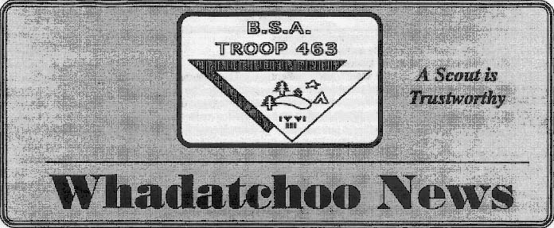
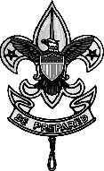
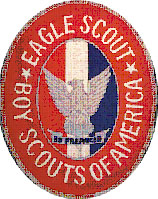

|
A Scout is Loyal |
Page 2 |
|
Elemental Patrol |
Killer Gerbil Patrol The patrols are in kind of a jumble right now so I’m kind of at a loss for words. The people in my patrol for now are me, Aaron Engelberg, Sean Papay, and David Chambers. I am proud of not only my patrol but all the boys in the troop for doing a fabulous job at Brian’s Eagle ceremony. All for this Wadatchoo Newsletter, Bye! |

| A Scout is Helpful |
Page 3
|
|
Know Nothing Patrol In our patrol we have six members. The newest scout with us is Wesley, and then we have Bryce and Justin. We also have Matthew who just got the rank of Tenderfoot, the only person in the troop getting rank. We also have Ed and me, Chris. Everyone in the KN patrol went to summer camp except Wesley. Everyone got merit badges and Ed was the only person in the troop who got archery out of 6 people. |
 SPL Corner It’s finally the start of a new season of boy scouting, and I am pleased to
report that things are looking good now, even after our moderately shaky start. We say our goodbyes to
old scouts and our hellos to those who are new. The troop will be undergoing some reformations, and
reconfigurations. Brian and James will take over the positions as patrol leaders with a reorganized
troop to incorporate 2 patrols. Hopefully our new fist class scouts, Chris, Sean, and possibly a
couple others will be able to take on more diverse rolls in the troop that will enable them to
complete leadership position requirements for their next rank. I believe we have a good strategy to
accomplish any challenges that may arise. From there things should be running quite a bit more
smoothly, once the new positions are taken and our leaders continue to contribute their time. As for
the meetings themselves, it is my belief that we have a strong start and a have begun forming a
healthy habit regarding timeliness. |
| A Scout is Friendly |
Page 4
|
|
Polly Dome Lakes This easy four-day backpacking trip was one of the most exciting and fun troop trips
in quite some time. After the insanely long drive to Tenaya Lake, we embarked on the hike to Polly
Dome Lake. The trail was fairly level, and at only four miles, was pretty short, yet still a lot of
people were fairly tired when we got there. The last mile was highly mosquito infested, and the last
half-mile was cross-country. The mosquitoes were very annoying, and, as always, the repellent seemed
ineffective. However the cross-country was very fun. There are twenty billion “trails”
leading from the real trail to the lake, but none of them seemed to go all the way, and they were
hard to follow and often just a slight depression in soft ground for a few feet, or a three ducks
spaced at a few hundred yards. Despite many people doubting that the lake existed, and being very
tired (for many it was there first backpacking trip) we soon got to the lake and set up camp. For
the rest of the day we basically did nothing, just rested or played in camp. |
new scouts wanted to go and Chris and Todd had been saying since the day before that
they didn’t want to do anything but sleep all day. So we decided it’d just be us three,
but wait, now Mr. Oatman decided he’d go. So Todd changed his mind, which caused Chris to
change his mind, and Sean now wanted to go. His dad wanted to do what he did, so now no adults
wanted to stay behind, so everyone went (My heads spinning too). So we all set out through the
mosquito-infested woods up towards Polly Dome’s summit. Again there was no trail, so all of it
was cross-country which is loads of fun. The hike was fairly short, probably less than three miles
round trip, but it was pretty steep and there was no trail. We soon got to a ridge where you could
see Half Dome and Clouds Rest, and we were just 600 vertical feet from the top (and 100 horizontal
feet ;-)) Some of the scouts decided it was too steep or that they were too tired, so only about
half of us continued up. It was very steep and very hard to find a route, but thirty minutes later
we reached the top and were rewarded with an awesome 360-degree view. We ate lunch (now, when I
say “we”, think those who brought it, and when I say that think only half of us). We
then took some more pictures and headed down. On the way down we had a nice slide down an insanely
steep snow shoot, and then, when re-united with the group, we had a couple of snowball fights (in
June!!!). We soon got back to camp and then some of us went swimming while some sat around doing
nothing. |
| A Scout is Courteous |
Page 5
|
|
probably a better view of the places we couldn’t see from Poly Dome
(due to where we now stood being in the way). We could also see Poly Dome, which was kind of funny
since it looked like a little mound of granite, about a tenth the size of where we now were. After
lunch and pictures, we started down, determined to beat the rain to camp. We got back to camp fairly
late and didn’t have time to go swimming, and it was still threatening rain, but as the evening
progressed the clouds disappeared. As we were making dinner, or, more accurately cleaning it up, I saw
a bear behind Sean. I calmly pointed this out to him, and he thought I was joking. I finally got him
to turn around, and boy was he surprised to see a bear a only about twenty feet behind him. I went and
got my camera (and so did a bunch of other people) and we all proceeded to shoot the bear until it got
too camera shy and left. For many of the scouts, this was the first bear they’d ever seen, and
finally knew for sure that bears weren’t just a government conspiracy. We didn’t see it
again. We made double sure that our food was secure, and then we went back to messing around. |
Oljato Lots of people went to Camp Oljato. At Oljato this year, you could not ask for better weather. The
sun was out every day and there were no rain clouds. There was a lot of variety of what merit badges
people took, from camping to woodcarving. Some eagle required, some not. Over all, everyone who went
got at least 1 merit badge. Some even got 4. In the Olimpicade, Ed got 3rd in Chris’s Big Bad
Archery Tournament and Chris and Matt got third in the Regatta. Justin got the most improved shooter
in rifle and got the rifle merit badge. Again, we got the Navaho campsite and had to share it with
another troop. |
| A Scout is Kind |
Page 6
|
|
Morro Strand Beach You might remember me once saying during the announcements that everyone was to show up at the church
for this outing at 7 AM sharp, that way we can get this outing started in a timely manner. It was 7:05
in the morning when I arrived at the church, reasonably early when compared with my previous
reputation. However that’s a different story all together. This story begins with me, hoping
against hope that at least one other senior scout would be there at the church, to great me non-too
sarcastically, and crack jokes about my being on time for once. Unfortunately as it turns out, that
one candidate just so happen to have a reputation of his own. I wont go into detail, suffice it to
say, he didn’t show up. |
some minor complications with the campsite arrangements, the morning went pretty
smoothly. In fact we were able to get onto the beach by around one o’clock. |
| A Scout is Obedient |
Page 7
|
|
others who searched further down the beach. |
 Eagle Court of Honor I just wanted to take this opportunity to Thank all of you who helped to make Brian’s
ceremony such a success. It wouldn’t have happened without YOU! |
| A Scout is Cheerful |
Page 8
|
|
more people with a heartfelt Thank you. Julie for helping to address the letters to dignitaries and gathering them as the responses came in and to Lisa for filling in for Julie and presenting them at the ceremony. Matthew and Tom for documenting this special day for us on video and Marie and Eng for taking photos. Our family is looking forward to seeing all of these and reliving the moment. I’m sure Brian will enjoy it more when he isn’t sitting on center stage. I also want to thank Vickie and Nick both for coming to the ceremony and for helping out too. Thank you Vickie, for taking such care to have the Eagle Plaque ready in time for the ceremony and for responding to my email request for help so quickly. You will both be missed! A BIG THANK YOU to Marie and Eng (and family members) for handling the clean up after the ceremony and reception…what a relief it was to know that task was being handled by such capable people…THANK YOU! Marie, thank you for being there those last few days to take on some of the extra tasks…checking on music, call for tables and chairs, help with the set up and those last “to do” items as they came up. Your help was greatly needed and appreciated! I also need to thank Eileen for volunteering to serve the cake and all the other help you gave. It was great to have you there lending your generous hand. I sure hope I haven’t missed anyone who did extra to help out. Our family gives everyone a big salute and thank you! Now, this troop has more experience and will be ready for our next Eagle Court…Bryant? James? We’re ready for you! |
|